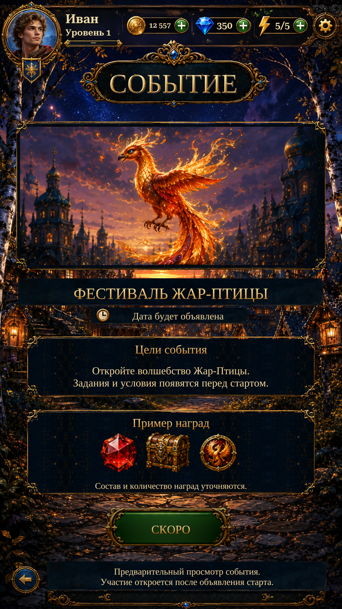

Actual Unity page: shared Home header and environment, repaired Events frames, Firebird scenery/glow, separate reward icons and source footer.
A dedicated Event Detail original was located after this rebuild. This R1 page predates that discovery and adapts Events artwork; it does not match the newly found original. Select the dedicated reference below to inspect it. Participation remains unavailable; dates and reward quantities are unconfirmed.

Actual Unity Play Mode capture; isolated test save and simulated screen/safe area.
Implementation and verification · Design adaptation and remaining differences